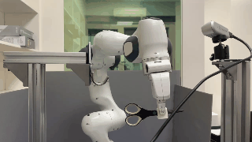
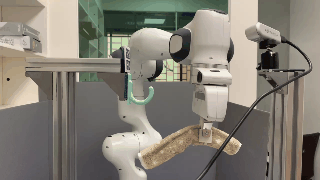
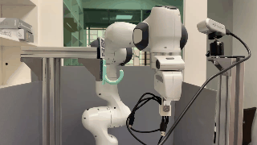
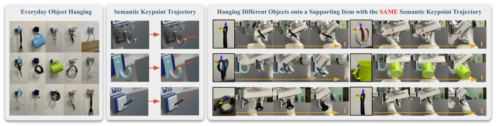
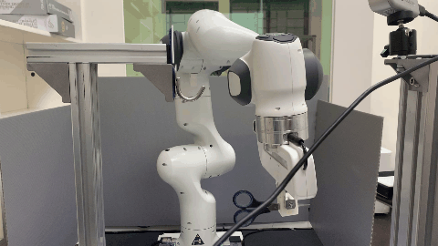
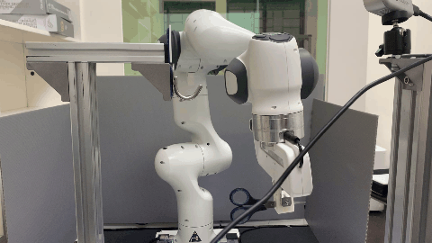
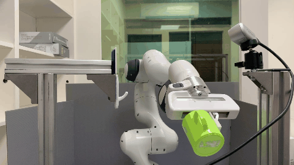
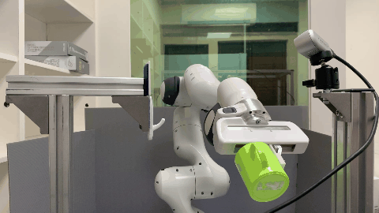

In this paper, we study the problem of robotic hanging of a wide range of grasped objects on diverse supporting items. Hanging objects is a ubiquitous task that is encountered in numerous aspects of our daily lives. However, the substantial variations in the shapes and structures of both the object and supporting item bring two challenging issues: (1) determining the taskrelevant geometric structures across different objects and supporting items, and (2) identifying a robust action sequence that can accommodate the shape variations of supporting items. To this end, we propose Semantic Keypoint Trajectory (SKT), an actionable representation that models the hanging part of a target supporting item and defines suitable action sequences for hanging objects. This representation is object-agnostic, making it highly versatile and applicable to various everyday objects. We propose a Shape-conditioned Trajectory Deformation Network (SCTDN) that learns to generate semantic keypoint trajectories by deforming template trajectories based on the shape-conditioned point features of the targeted supporting items. We conduct extensive experiments to showcase the substantial improvements achieved by our framework compared to existing robot hanging methods in terms of the success rate and inference time. We demonstrate the versatility and applicability of translating our simulator-trained framework into real-world scenarios for hanging grasped objects on diverse supporting items.


The task of robot hanging a grasped object onto a supporting item involves a diverse range of grasped objects and supporting items with various shapes and geometric structures. In this work, we introduce Semantic Keypoint Trajectory (SKT), an actionable representation that specifies where and how to hang grasped objects onto a supporting item. Our experiments show that SKT is object-agnostic, enabling hanging various objects onto the same supporting item.
We introduce a novel learning framework for SKT generation: Shape-Conditioned Trajectory Deformation Network (SCTDN). SCTDN takes the partial point cloud of a supporting item as input and generates the corresponding SKT by deforming a retrieved template SKT based on the task- relevant geometric structure features.
Building on the well-established advancements in object keypoint prediction, our proposed representation and the learning framework aims to tackle the challenge of effectively determining the appropriate actions for object hanging tasks.
Our environment setting of the hanging task involves a supporting item and an object grasped by a robot arm. The robot’s objective is to determine a sequence of actions for hanging a grasped object onto a supporting item. To obtain the keypoint of an object, an Apriltag board is positioned in front of the hanging part to establish the oriented object keypoint. Alternatively, one can use off-the-shelf methods such as Takeuchi et al. [1] and Wei Gao, Russ Tedrake [2] to obtain oriented object keypoints.

For simulation evaluation, we assess the performance of all methods by measuring their success rates and inference times across 3,000 hanging processes involving 50 objects and 60 unseen supporting items (Top). These supporting items are manually categorized into four levels of difficulty: Easy, Normal, Hard, and Very Hard based on the complexity of the hanging part on them, with 15 assigned to each level. For real-world evaluation, we used a total of 10 objects and 10 supporting items for our hanging evaluation (Bottom).
The visualization results of the semantic keypoint trajectories of the testing shapes before and after deformation by SCTDN. (a) before deformation (using template semantic key- point trajectories only.) (b) after deformation of the template semantic keypoint trajectories using SCTDN.
Simulation
Real World
The visualization of point clouds, affordance maps, and the semantic keypoint trajectories for each supporting item.


 



 



| Waypoint Num | All (%) | Easy (%) | Normal (%) | Hard (%) | Very Hard (%) | |
|---|---|---|---|---|---|---|
| SCTDN (pos) | 10 | 79.4 | 74.8 | 90.3 | 78.3 | 74.3 |
| SCTDN (pos) | 20 | 83.3 | 84.1 | 89.2 | 80.5 | 79.5 |
| SCTDN (pos) | 40 | 83.7 | 85.5 | 91.7 | 79.7 | 77.7 |
| SCTDN (pos+rot) | 10 | 69.4 | 90.7 | 83.1 | 60.1 | 43.6 |
| SCTDN (pos+rot) | 20 | 67.6 | 85.9 | 78.4 | 54.5 | 51.7 |
| SCTDN (pos+rot) | 40 | 71.5 | 91.5 | 80.5 | 56.0 | 58.1 |
We implement an extended version of SCTDN that consider both position and rotation of the semantic keypoint trajectory. For this extended version, the final trajectories \( \hat{\mathcal{T}^{S}} \) is defined as: \[ \hat{\mathcal{T}^{S}} = \Big\{ \big\{ \xi^{\text{temp}_{\hat{c^S}}}_{i_{\text{pos}}} + \hat{\xi^{\text{offset}}_{i_{\text{pos}}}}, R^{-1}\big(R(\hat{\xi^{\text{offset}}_{i_{\text{rot}}}}) \times R(\xi^{\text{temp}_{\hat{c^S}}}_{i_{\text{rot}}})\big) \big\} | i \in [0, 1, ..., T-1] \Big\} \] , where \( i_{\text{pos}} \) and \( i_{\text{rot}} \) are the position and rotation of a waypoint, respectively. The function \( R: \mathbb{R}^{w} \rightarrow \mathbb{R}^{3 \times 3} \) maps the rotation representation of the waypoint to the corresponding rotation matrix. In our implementation, we adopt a 6D rotation representation to ensure the continuity of rotations.
In this section, we conduct a comparative analysis of different waypoint numbers and the use of position-only and position-and-rotation representations to assess their impact on the execution success rate of SCTDN. The corresponding results are presented in Table 1. Firstly, focusing on the waypoint number, we observe a slight improvement in the success rate when the number of waypoints is set to 40. However, the influence of varying waypoint numbers on the success rate is not significant. Secondly, examining the waypoint dimension, we find that incorporating rotation does not yield better results compared to the original version that solely considers position. On the contrary, the overall success rate experiences a decline of over 10%. This decline can be attributed, in part, to the inherent challenges associated with training the rotation component, as the rotation loss fails to converge. Consequently, inaccurate rotation predictions during execution contribute to the overall decrease in performance.
| Waypoint Type | Waypoint Num | All (%) | Easy (%) | Normal (%) | Hard (%) | Very Hard (%) | |
|---|---|---|---|---|---|---|---|
| SCTDN (pos) | absolute | 10 | 51.0 | 59.2 | 63.6 | 46.3 | 35.1 |
| SCTDN (pos) | absolute | 20 | 50.5 | 55.1 | 70.0 | 44.5 | 32.5 |
| SCTDN (pos) | absolute | 40 | 58.0 | 41.3 | 71.6 | 63.5 | 55.7 |
| SCTDN (pos) | residual | 10 | 48.7 | 85.2 | 64.8 | 33.1 | 11.7 |
| SCTDN (pos) | residual | 20 | 56.4 | 88.0 | 78.8 | 46.8 | 11.9 |
| SCTDN (pos) | residual | 40 | 57.1 | 88.7 | 80.3 | 45.3 | 14.3 |
| SCTDN (pos+rot) | absolute | 10 | 49.6 | 66.7 | 69.7 | 38.7 | 23.5 |
| SCTDN (pos+rot) | absolute | 20 | 50.9 | 64.9 | 61.5 | 47.1 | 30.3 |
| SCTDN (pos+rot) | absolute | 40 | 44.3 | 60.7 | 58.9 | 39.5 | 18.0 |
| SCTDN (pos+rot) | residual | 10 | 54.9 | 86.3 | 74.8 | 44.4 | 14.0 |
| SCTDN (pos+rot) | residual | 20 | 55.2 | 84.5 | 82.0 | 42.0 | 12.3 |
| SCTDN (pos+rot) | residual | 40 | 53.0 | 83.7 | 73.2 | 38.7 | 16.4 |
In the VAT-MART implementation, a residual representation is employed for the action trajectory. % In our experiments, we examined both absolute trajectory representation and residual trajectory representation. We also investigated the effects of different waypoint numbers and compared position-only and position-and-rotation trajectories. Table 2 presents a comprehensive summary of the inference results. Analysis of the experimental results revealed that the overall impact of waypoint numbers on the success rate is not significant. Furthermore, when using absolute trajectory representation, the success rate was slightly higher compared to residual trajectory representation. Moreover, when considering both position and rotation, the residual trajectory representation exhibited superior performance. Conversely, in the case of position-only representation, the use of absolute trajectory representation yielded better results. However, despite these findings, the overall performance of VAT-MART fell short of SCTDN, particularly when confronted with more challenging supporting items. This can be attributed to the trajectories generated by VAT-MART lacking adjustments based on the geometric characteristics of the corresponding supporting items. Additionally, the trajectories produced by VAT-MART tended to be smoother and were unable to adapt to the finer adjustments required by certain supporting items.
| Waypoint Type | Waypoint Num | All (%) | Easy (%) | Normal (%) | Hard (%) | Very Hard (%) | |
|---|---|---|---|---|---|---|---|
| SCTDN (pos) | absolute | 10 | 65.7 | 85.9 | 91.5 | 47.2 | 38.1 |
| SCTDN (pos) | absolute | 20 | 67.7 | 79.1 | 87.1 | 51.6 | 53.1 |
| SCTDN (pos) | absolute | 40 | 72.1 | 78.8 | 89.6 | 57.7 | 62.4 |
| SCTDN (pos) | residual | 10 | 55.0 | 83.5 | 80.3 | 43.7 | 12.7 |
| SCTDN (pos) | residual | 20 | 49.9 | 89.1 | 78.9 | 24.4 | 7.2 |
| SCTDN (pos) | residual | 40 | 53.9 | 87.9 | 85.5 | 28.0 | 14.4 |
| SCTDN (pos+rot) | absolute | 10 | 67.5 | 87.2 | 81.9 | 56.1 | 44.9 |
| SCTDN (pos+rot) | absolute | 20 | 67.0 | 83.9 | 80.7 | 54.0 | 49.3 |
| SCTDN (pos+rot) | absolute | 40 | 68.7 | 80.0 | 82.0 | 62.7 | 50.1 |
| SCTDN (pos+rot) | residual | 10 | 68.1 | 96.1 | 91.2 | 54.1 | 30.9 |
| SCTDN (pos+rot) | residual | 20 | 66.8 | 96.1 | 89.3 | 54.3 | 27.6 |
| SCTDN (pos+rot) | residual | 40 | 67.1 | 95.1 | 91.7 | 55.6 | 26.0 |
Table 3 illustrates the results of modified VAT-MART. Similar to VAT-MART, the overall conclusions remain consistent; however, on average, all versions of the modified approach exhibit higher success rates than VAT-MART. This improvement can be attributed to the consideration of crucial geometric features instead of relying solely on contact point features. By incorporating crucial geometric features, the modified VAT-MART method demonstrates a greater ability than VAT-MART to generate corresponding semantic keypoint trajectories based on the supporting item.

Although SCTDN demonstrates significant strengths, our method does encounter two com- mon failure cases. The first case relates to bad trajectory generation, which occurs when specific supporting items, as depicted in Figure above lead to semantic keypoint trajectories that result in significant collisions between the object and the supporting item, ultimately resulting in fail- ure. The second case involves poor contact point prediction. If the determination of the contact point is inaccurate, it affects the alignment of the template trajectory to an unsuitable position, impeding the generation of an appropriate semantic keypoint trajectory based on the shape.
[1] Takeuchi et al., "Automatic Hanging Point Learning from Random Shape Generation and Physical Function Validation", ICRA, 2021
[2] Gao, Wei and Tedrake, Russ, "kPAM 2.0: Feedback control for category-level robotic manipulation", IEEE Robotics and Automation Letter, 2021
[3] Wu et al., "VAT-Mart: Learning visual action trajectory proposals for manipulating 3D articulated objects", ICLR, 2022
@article{skthang2023,
title={SKT-Hang: Hanging Everyday Objects via Object-Agnostic Semantic Keypoint Trajectory Generation},
author={Chia-Liang Kuo, Yu-Wei Chao, Yi-Ting Chen},
year={2023},
booktitle={arXiv},
}